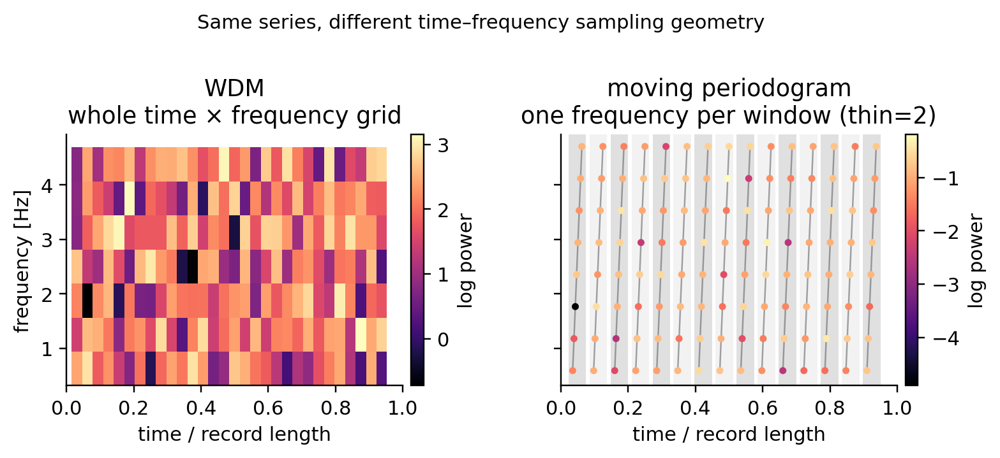
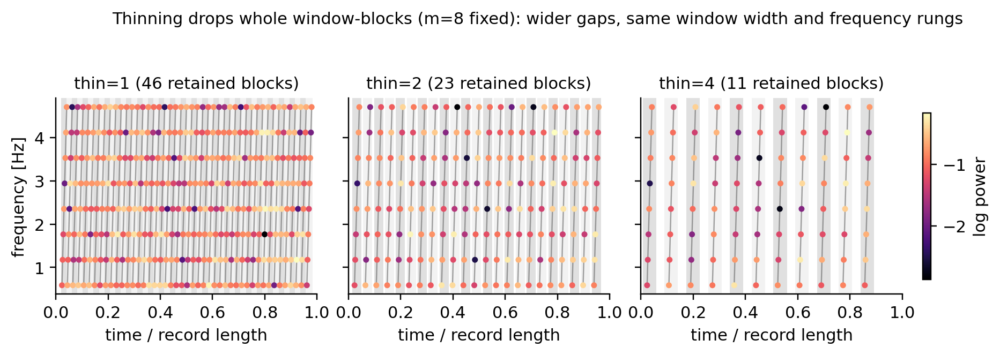
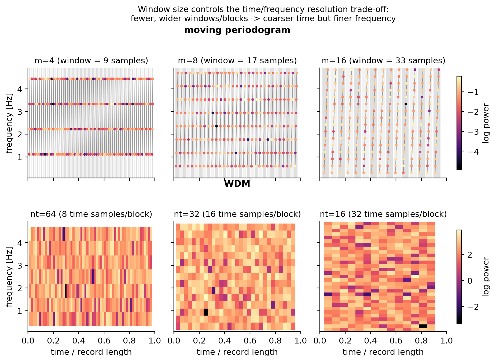

Moving periodogram versus WDM#
This page is a visual intuition guide for two time–frequency summaries that can feed the scalar time-varying log-P-spline model. They use the same input series, but they spend their observations differently:
WDM evaluates a coefficient at every retained time and frequency cell.
The moving periodogram evaluates one frequency per moving window, cycling through the frequency rungs in a zig-zag pattern.
The distinction is about the observation geometry, not just about how densely the output is plotted.
{kind=link}

Reading the figure#
The WDM panel is a rectangular grid. At each retained time there are several frequency coefficients, so a tensor surface such as
has observations spread over the full time–frequency rectangle.
The moving-periodogram panel is a thread through that rectangle. For a half-window width \(m\), the implementation uses the frequencies
and assigns the rung
to successive window centres. The zig-zag is therefore already present with
thin=1. Increasing thin removes complete blocks from that path; it
does not create the zig-zag.
In the right-hand panel, the alternating light/dark vertical bands each mark
one retained window-block: the thin gray line inside a band connects the
m points that come from that block’s sequence of window centres, in the
order the zig-zag visits them. A gap between bands is time skipped by
thin – samples that fall in a window whose block was dropped.
What the package returns#
Use the raw function when the scattered geometry matters:
from log_psplines.preprocessing.moving_periodogram import (
tang_moving_periodogram,
)
raw = tang_moving_periodogram(x, m=8, thin=2)
# raw["u"], raw["omega"], raw["coeff"], raw["mi"] are one-dimensional
u and omega give the exact time and angular-frequency coordinate of
each complex ordinate. mi = abs(coeff)**2 is its power. These arrays do
not form a rectangular image, which is why they are useful for understanding
the transform but are not directly the package’s ordinary PowerSpectrum
contract.
For the existing scalar fitting path, use the adapter:
from log_psplines import moving_periodogram
data = moving_periodogram(
x, dt=dt, m=8, thin=2, time_bin=1, freq_bin=1
)
# data.power and data.counts have shape (time, frequency)
The adapter pools the scattered ordinates into rectangular cells, sums the
original powers and exact counts, and represents each retained time block by
its pooled centre. This makes it compatible with the existing fit
interface, but it intentionally hides the within-block scattered coordinates.
Boundary and thinning intuition#
The implementation does not pad the series. Consequently, the first centre
is \(m+1\) in one-based indexing, and only complete retained blocks are
used. The final samples may therefore be outside every retained window,
especially for larger thin. This is a boundary property of the current
transform, not missing data inferred by the spline model.
The following small check exposes the geometry without reimplementing the transform:
for thin in (1, 2, 3):
out = tang_moving_periodogram(x, m=8, thin=thin)
centre = np.rint(out["u"] * len(x)).astype(int)
rung = np.rint(out["omega"] * (2 * 8 + 1) / (2 * np.pi)).astype(int)
print(thin, centre[:8], rung[:8])
The first eight rungs repeat 1, ..., 8 for each complete block. When the
thinning factor changes, the repeated blocks are farther apart in time, while
the frequency cycle itself stays the same.
{kind=link}

Same m (so the same window width and the same m frequency rungs),
only thin changes across the three panels. The shaded bands and
connecting lines are the same retained window-blocks as in the geometry
figure above; increasing thin keeps every block’s shape identical but
drops whole blocks, so the gaps between shaded bands widen and fewer blocks
survive. This is the “dependence control” mentioned in the module
docstring: nearby windows overlap heavily, so thinning reduces how many
highly-correlated blocks are fed to the likelihood, at the cost of using
less of the series.
Window size: the resolution trade-off#
Both transforms have a single knob that trades time resolution for frequency resolution:
the moving periodogram’s half-window
m(window length2*m+1samples), andthe WDM’s number of time blocks
nt(block lengthN/ntsamples).
A wider window/block averages the series over more samples, so each
time-frequency cell is estimated from more data (lower variance) but the
transform can no longer say when within that window the power changed
(coarser time localisation). A narrower window/block does the opposite: it
tracks time variation more closely but each estimate is noisier and the
zig-zag/grid can only reach coarser frequency rungs. This is the usual
uncertainty-principle trade-off of any short-time spectral estimate, and it
is why m (or nt) should be chosen to match how fast the process’s
spectrum is expected to evolve.
{kind=link}

Reading left to right, each transform is shown with a shrinking number of
wider windows/blocks. For the moving periodogram, increasing m adds more
frequency rungs (finer frequency, since f_j = j / ((2m+1) dt) for
j=1,...,m) while each rung is revisited less often (coarser time). For
the WDM, decreasing nt widens each time block (coarser time) but likewise
increases the number of frequency rows the same total bandwidth is divided
into (finer frequency). The two transforms reach the same qualitative
trade-off through different knobs (m directly sets both frequency count
and window width; nt sets the number of time blocks, and the frequency
count follows from the block length).
In practice:
start with a window/block short enough that the PSD looks roughly stationary within it,
then increase
m/decreasentonly as far as the noise in individual cells (visible as speckle in the figure above) starts to interfere with the science question, andremember that
thin(moving periodogram) ortrim_time(WDM) control how many of those cells are kept for fitting, not the resolution itself.
WDM is optional#
The comparison figures use log_psplines.preprocessing.wdm.wdm_periodogram()
and therefore need the optional wdm-transform dependency. Recreate them
with:
.venv/bin/python docs/studies/moving_periodogram_vs_wdm.py
The moving-periodogram examples and tests do not require that optional dependency. In both cases, the plotted powers retain the transform’s native coefficient-variance convention; the figures are about sampling geometry and resolution, not a calibration or PSD-normalisation comparison.